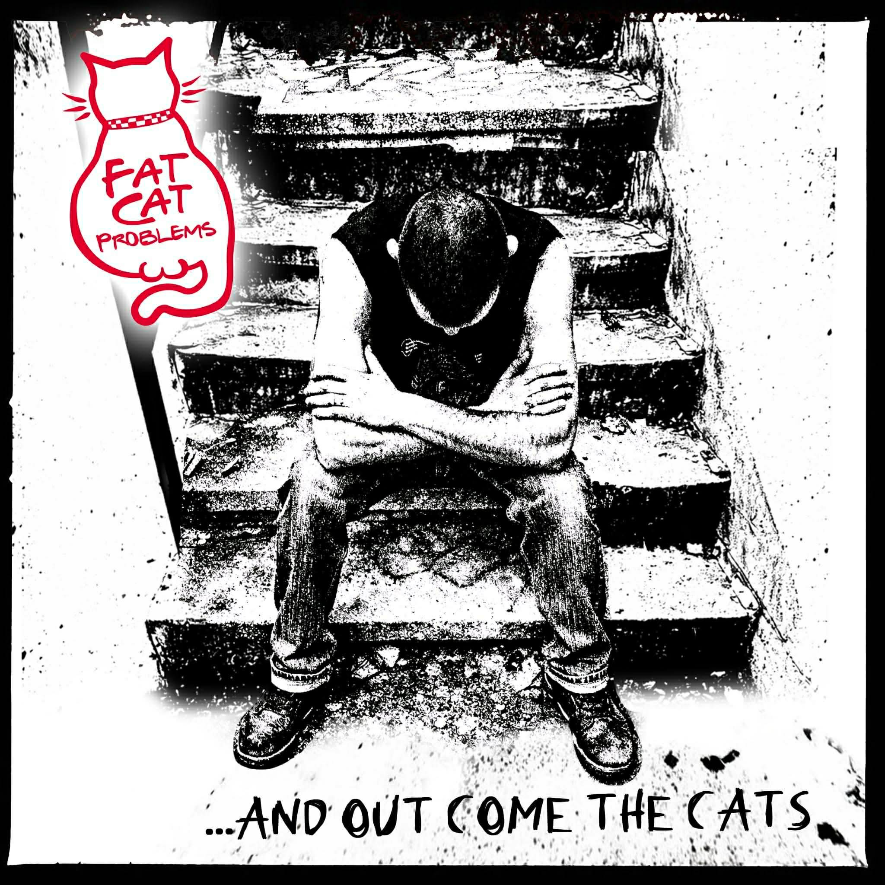

And out come the Cats (EP)

ЦЪКНИ ЗА ЦЕЛИЯ АЛБУМ
ВИЖ ТЕКСТА
FAT CAT PROBLEMS
Куплет 1:
Fat cat не минава тънко,
щот стомаха му е пълен с дебела плънка.
Fat cat топките си не облизва,
за да кара църна маца да подгизва.
Fat cat е кадилак и цяла банда,
черен шлифер и обувки, време бомба!
Fat cat шамарите не го ловят,
той не е просто котка, той е лъвът!
Припев:
Fat cat – Не се прибира!
Fat cat – Не ще да спира!
Fat cat – Маците събира!
Fat cat е царя на панаира!
Куплет 2:
Fat cat е царя на квартала.
Найден се нарича и е цяла хала.
Fat cat не можеш да го надвиеш.
Със него няма смисъл даже да се биеш.
Fat cat тежи на своето място.
Една грешна стъпка и ще си на тясно.
Fat cat това му стига.
Той е връх на хранителната верига!
Аутро:
Fat cat problems...
I have fat cat problems.
You have fat cat problems.
I have fat cat problems!
ВИЖ ТЕКСТА
KUMОVE
Куплет 1:
Dodje kum na svadbu, sav je unezveren,
pogled na pevaljku totalno usmeren.
Pevaljka je dobra, dobri su i cvarci,
al' kad vide mladu, prodjose ga zmarci.
Припев:
Jao, kume, sta uradi kume,
zasto kumu napravi traumu!
Куплет 2:
Harmonika svira pa sve prsti, puca,
kum se preznojava, nesto bi da... ljubi.
Tad ugleda kako mlada namiguje,
pritisak mu skoci i poce plan da kuje.
Този текст не е писан от нас и е взет от сръбска песен.
ВИЖ ТЕКСТА
Мастика
Куплет 1:
Мърфи каза дай да пием бира две (Хей!),
така ще можем лесно да се разберем (Хей!).
Поръчахме си бирчка на корем (Хей!),
поръчахме си даже малко мастиче... (ооооооо)
Но после пробвах да отида да опитам да пикая…
Мърфо вика: „Как си, Коле?“ (Коле!),
викам: „Май ще се оправя“.
Хей, не мога, две не виждам, май бая съм се намазал...
„Айде, хора, ще си ходя, докато не съм се смазал!“
Бридж:
Искам само вкъщи да се прибера…… /х2
Припев:
После някой ми каза кво е станало (оооОООооо)
Доста късно разбрах какво е станало (оооОООооо) /х2
Куплет 2:
Кво ми трябва – трябва само мойта стая,
в нея мога да изкарам чак до края…. (Мхм)
Трябва ми да дремна два-три часа
и после мога пак да бъда Кольо с баса!
Бавна част:
Стоях си аз на Плиска и си чаках автобуса,
когато някой от изненада силна тупаница ми издруса.
Шапката ми падна, наведох се да си я взема,
нещо в мене се надигна – ей го на, стана проблема!
Взе да става светло и започна да ми светва ясно,
болката в мен започна да препуска бясно.
Аз не съм жертва на уличен побой,
ами просто съм утайка на уличния слой (слоооооой)!
Това си е по истински случай...
ВИЖ ТЕКСТА
Роман за морските сънища
Където морето разлива вълните
на плажа на морския град.
С пяна покрита, мъртва медуза
на плажа на морския град.
Там често се срещаме и се обичаме
на плажа на морския град.
И често си казваме, че си приличаме
на плажа на морския град.
Припев:
На плажа до морския град –
И да искам, аз се моля...
(Да те срещна аз се моля!)
На плажа до морския град –
Сега те чакам за сбогом.
На плажа до морския град –
Там всичко е тъй различно, знам….
🌊🌊🌊
Песента е на Група Глоба и този кавър е тук просто защото песента е супер яка
Текста съм го вадил по слух и не гарантирам че е така
EP: "And out come the Cats" (2026)
Тегли на воля
Видеа

Mr.KolBass - Роман за морските сънища (Глоба cover)